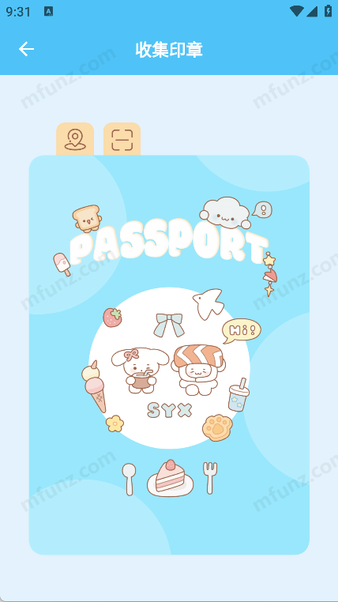

LoveSong 深度盘点：后援会应援 App 到底能帮粉丝做什么
从灯牌蓝牙控制、印章打卡到影音图库，系统性梳理这款宋亚轩后援会官方 App 的能力边界与使用场景。
粉丝应援这件事，早就不是举个灯牌喊两句口号那么简单了。宋亚轩的后援会做了一款叫 LoveSong 的 App，它的官网上挂着内测版本 v1.0.2，刚出来的时候就有粉丝在问：这东西到底能干啥？会不会就是个签到打卡的壳子？我把目前能摸到的功能完整过了一遍，聊聊这款应用的能力面。
核心域：灯牌蓝牙实时控制
这是 LoveSong 最硬的一块，也是它区别于普通后援会 App 的地方，安装包从官方下载拿就行。演唱会现场的灯牌不是死的 LED 板，而是可以被手机实时操控的可编程设备。
连接层面，它走的是蓝牙 BLE 协议，标称距离 10 米，但实际场馆里有效距离通常只有 1~3 米——现场电磁干扰太厉害了，闸口附近几百人同时开蓝牙搜索设备，再加上安检设备的电磁波，连不上是常态。官方的建议是过了安检找到座位再连，手机放身前口袋，灯牌拿在手里，别塞进金属背包或牛仔裤后袋挡信号。这些注意事项在 LoveSong文档 的灯牌连接指南里写得挺细的。

连上之后的改字改色体验是这块最有意思的地方。点击连接设备页中间那个圆形"轩"字图标就能进自定义界面，可以输任何应援语、选预设颜色或在色盘里拉任意颜色、切换字体风格——而且是实时同步，边改边看灯牌上的效果，不用点"保存"也不用等发送。演出进行中随时可以改，某首歌换一套词，安可再换一套，只要蓝牙没断就是即时生效。
这块的亮点是"所见即所得"的交互设计，没有传统蓝牙控制软件那种"发指令 → 等响应 → 刷新确认"的迟滞感。短板也很明显：目前内测版一次只能控制一个设备，同时带应援棒和 mini 灯箱的话得分别连、分别切，不能并行。
次核心域：印章护照与打卡签到
这是后援会体系里最有仪式感的一块。从使用政策文档里能看到，LoveSong 有一套"印章护照"机制——账号注册后可以在 App 里攒印章、积累签到积分，数据存在服务器端，换设备也不会丢。
打卡功能绑定了地理位置权限。印章打卡需要校验定位范围，不是随便点一下就能拿印章的。这意味着想去线下应援活动打卡，得真的去到现场。内测版的政策里明确说了拒绝位置权限的话，连灯牌都连不上、打不了卡。

这块的能力设计偏"粉丝运营"而非"工具"——印章和积分具体能换什么福利、签到体系怎么和后援会活动联动，内测阶段还没完全铺开。但从后援会的运营节奏来看，这应该是后续粉丝社区功能的基石。
规划中：应援影音图库
样本里提到了一个高清应援图图库的规划——官方视觉设计、演出宣传海报、高清舞台照片（无水印或低水印版本）、活动主视觉图，这些素材供粉丝二次创作。目前 v1.0.2 内测版首页四个卡片里还没有独立的图库入口，但开屏引导页里已经出现了宋亚轩的照片和可爱小狗 IP 形象，这些素材的来源和分发方式还在调整中。
二次创作的使用规范写得比较清楚：仅限个人非商业用途、标注素材来源、不得商用、不得发布有损艺人形象的内容。这块如果后续和粉丝社区打通，会是 LoveSong 内容生态的重要组成部分。
设置与账号：权限即功能
LoveSong 的设置页最后一个选项是使用政策和条款，虽然在底部但建议至少扫一眼。内测版的政策相对简洁，数据收集范围涵盖账号信息、蓝牙位置数据、打卡定位数据，这些权限基本都是"不给就用不了核心功能"的级别——拒绝蓝牙权限连灯牌都搜不到，拒绝位置权限连不上灯牌也打不了卡，拒绝账号注册印章存不下来。
从兼容性和风险排查的角度，App 还会收集设备品牌型号和蓝牙设备历史绑定记录，用于内测阶段的问题定位。数据保护方面，后援会应该自己运营服务器，第三方拿不到用户数据。
短板也得说
说了那么多正面的，LoveSong 作为内测版还有几个绕不开的局限。
一是多设备并行控制的缺失。v1.0.2 一次只能连一个灯牌或灯箱，对于带多块应援设备的重度粉丝来说体验有限。二是蓝牙抗干扰能力偏弱——场馆里电磁环境一复杂，连接稳定性下降得很快，用户必须主动配合（手机位置、连接时机）才能维持稳定连接。三是功能完成度不匀——灯牌控制已经比较成熟，但影音图库、粉丝社区还在规划中，印章体系的闭环也没完全跑通。最后是内测版不承诺数据长期保留，政策里明确写了这点，正式版上线后这块可能会调整。
什么样的人该用它
第一类是重度应援玩家——带可编程灯牌去演唱会的粉丝群体，这是 LoveSong 最核心的服务对象，蓝牙实时控制这块没有替代品。第二类是喜欢收集和二次创作的粉丝——等图库和社区功能完善后，可以在 App 内获取官方素材、参与粉丝互动。第三类是想系统参与后援会活动的新粉——印章护照和打卡体系能帮新粉快速融入后援会的活动节奏。
总的来说，LoveSong 目前是一款"硬件连接工具 + 粉丝运营入口"的混合体。灯牌控制这块的技术实现已经到位，但运营侧的功能还在路上。后援会能走到哪一步，取决于后续社区和内容生态的建设速度。想体验完整形态的话，可以多留意后援会的官方公告，等正式版推送再入坑也不迟。另外，这套资料在三个仓库都能拿到——GitHub 的完整目录是主版本，国内网络访问不方便的话可以直接看Gitee镜像或GitCode备份。